Technical report V1.0.2
Accuracy
Current V1.0.2 results: 2,048–4,096 taxa rerun in full; 32–1,024 taxa retained after matching current-version spot checks. Comparator accuracy is reused. Development data.
Gene-tree topology


Gene-tree branch lengths
Mean NMAE on each method’s correctly recovered internal branches, averaged across alignments. Lower is better.

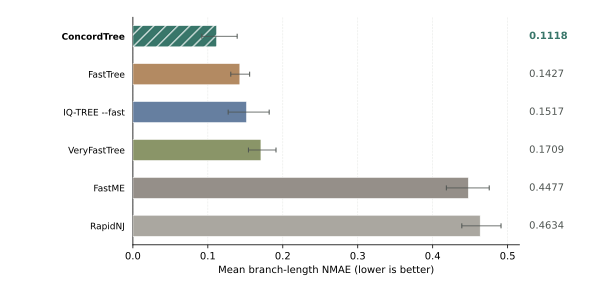
Species-tree topology
Small · Simple
32–256 taxa
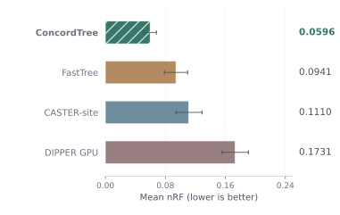
Small · Complex
32–256 taxa
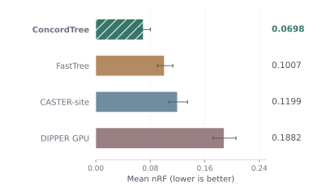
Large · Simple
512–4,096 taxa
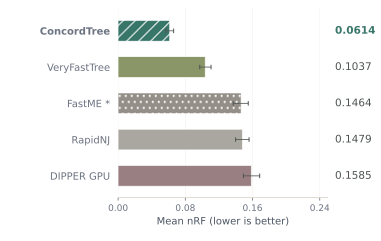
Large · Complex
512–4,096 taxa
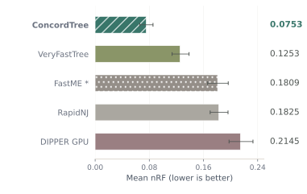
Small uses shared completed alignments. Large includes all available scales; FastME * excludes 4,096-taxon timeouts. Data & coverage
Empirical data
| Dataset | ConcordTree nRF | FastTree nRF | CASTER-site nRF | DIPPER nRF |
|---|---|---|---|---|
| Oakleaf butterflies | 0.0571 | — | 0.0286 | 0.6970 |
| 1KP plants | 0.1123 | 0.0979 | 0.2613 | 0.9222 |
| Papilionoid · plastid | 0.0456 | 0.0207 | 0.0705 | 0.2479 |
| Fish · UCE | 0.0625 | 0.0625 | 0.1562 | 0.7097 |
| Bembidion insects | 0.1163 | 0.1163 | 0.1163 | 0.5581 |
| Mammals | 0.0168 | 0.0000 | 0.0126 | 0.0420 |
| Ruminants | 0.0408 | 0.0000 | 0.0408 | 0.4845 |
| Placental mammals | 0.1519 | 0.1519 | 0.1392 | 1.0000 |
| Sigmodontinae | 0.1228 | 0.0175 | 0.1404 | 0.8641 |
| Wolbachia | 0.0333 | 0.0000 | 0.1667 | 1.0000 |
| Mean nRF | 0.0760 | 0.0519 | 0.1133 | 0.6526 |
Branch-support analysis

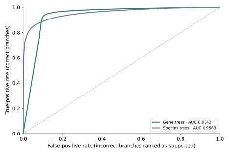
| Task | Pooled AUC [95% CI] | Coverage at display ≥95 | Correctness at display ≥95 |
|---|---|---|---|
| Gene | 0.9343 [0.8824, 0.9763] | 92.35% | 99.63% |
| Species · 32–1,024 taxa | 0.9563 [0.9539, 0.9587] | 18.81% | 99.99% |
Taxon completion
Paired topology ranking across all taxon sizes. Higher is better. Exact batch: the entire completed topology is correct.
Gene-tree completion

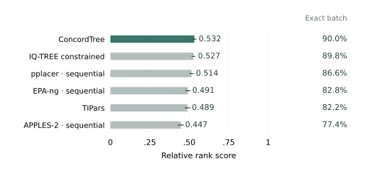

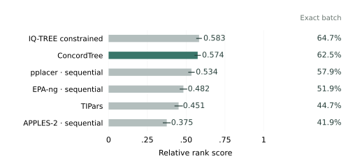

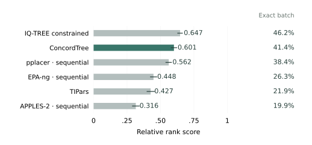
Species-tree completion

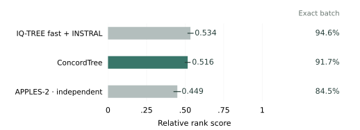

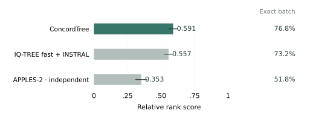

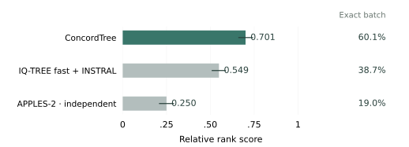
Metric & comparison protocol
On each input, a method earns 1 for each competitor it beats in whole-tree nRF, ½ for a tie, and 0 for a loss. We average across competitors, then equally across shared completed inputs. The score measures relative rank, not probability of correctness. Bars show 95% alignment-bootstrap intervals.
+1, +4 and +8 use separate paired panels. Gene methods use sequential placement, native TIPars or IQ-TREE constrained search. Species APPLES-2 and INSTRAL place independently; coincident queries remain unresolved, while ConcordTree can resolve relationships among new taxa. Exact batch recovery tests the complete output, including those relationships. INSTRAL uses IQ-TREE fast inferred gene trees; the true-gene-tree oracle is excluded. Results are descriptive development comparisons.